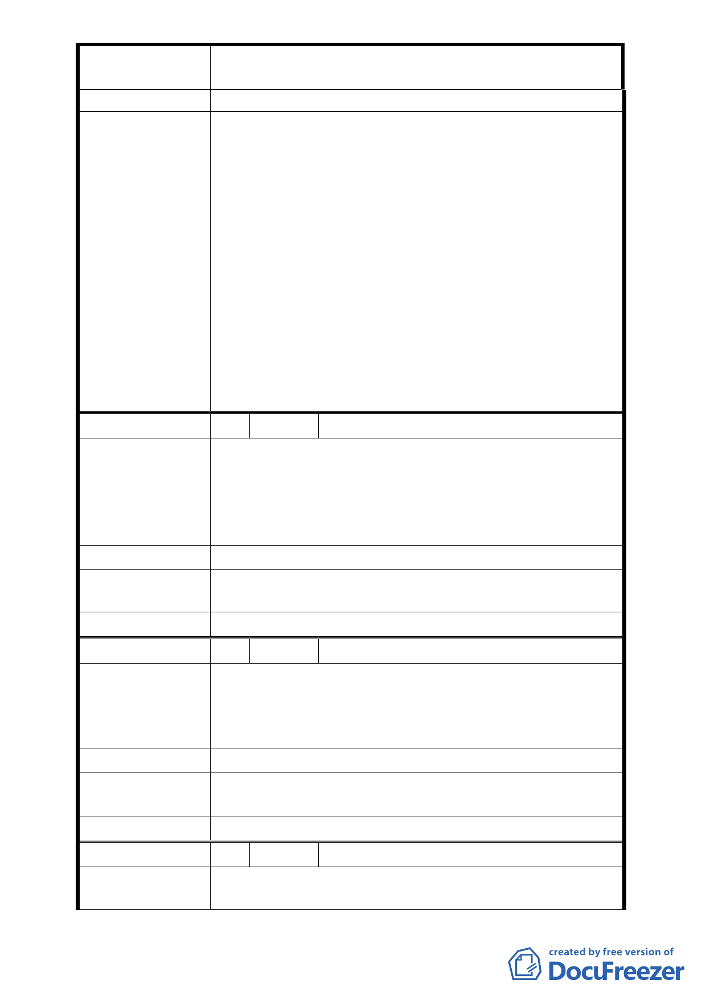

案
名
變更「臺北市士林區光華段士林紙廠土地」第三
種商業區（特）細部計畫案
委員會決議
5. 請審慎考量廢道後之交通動線妥善規劃替代道路。
1. 依 98 年 12 月 11 日專案小組決議略以：「… (五)動
線及交通規劃部分：計畫區西北側福德街 57 巷與東
北側福德街 48 巷之道路調整寬度一項，業經開發單
位與市府交通局討論同意調整寬度為 10 公尺。(六)
其他：有關本案人民陳情請開發單位與市府就提供
里民活動中心供當地居民使用一項，後續俟公園用
地完成捐贈市府程序後，由市府依相關規定辦
理。…」
2. 本案捐贈公園位置、形狀與原計畫不同，原則同意
本次會議市府都市發展局與申請單位所提公園面寬
調整幅度與開放空間系統結合之方案；另本案與基
地東北側(福德街 48 巷)緊鄰士林國小，其後續都市
設計管制與國小之管制規範事項，請併同前述公園
位置、開放空間系統予以檢討。
編 號 2 陳情人 邱德旺里長等 32 人
1. 士林街內原商三特，今士林紙廠又改為商三特，而士
林區大西街 31-79 號與大北路 100-118 號及小北街
陳 情 理 由 56-62 號，原為住三尚未列入商三特。
2. 本件公告士林區光華段三小段 896 地號等數十筆土地
原為住三，應變更為商三特以示公允。
建 議 辦 法 請將以上列為商三特以示公允。
處
理
意
見
陳情位置位於計畫範圍外，已錄案納入臺北市士林區通盤
檢討案內檢討。
委員會決議 請市府都市發展局另案參考辦理。
編 號 3 陳情人 邱德旺里長(含大北路住民)
為配合臺北市士林區光華段士林紙廠土地第三種商業區
陳
情
理
由
(特)細部計畫案(98.4.20 府都規字第 09830545600 號公
告公開展覽)，請將數百名建議案：北市都規字第
09604297600 號共同討論。
建 議 辦 法 打通士林區大北路至士林紙廠邊八公尺計畫道路。
處
理
意
見
陳情位置位於計畫範圍外，已錄案納入臺北市士林區通盤
檢討案內檢討。
委員會決議
請市府都市發展局另案參考辦理。
編 號 4 陳情人 楊錦宗里長
陳
情
理
由
1. 依據區民活動中心設置要點 3-2 項，附近活動中心使
用率達百分之七十以上，已無法滿足里民之需求。另
- 34 -